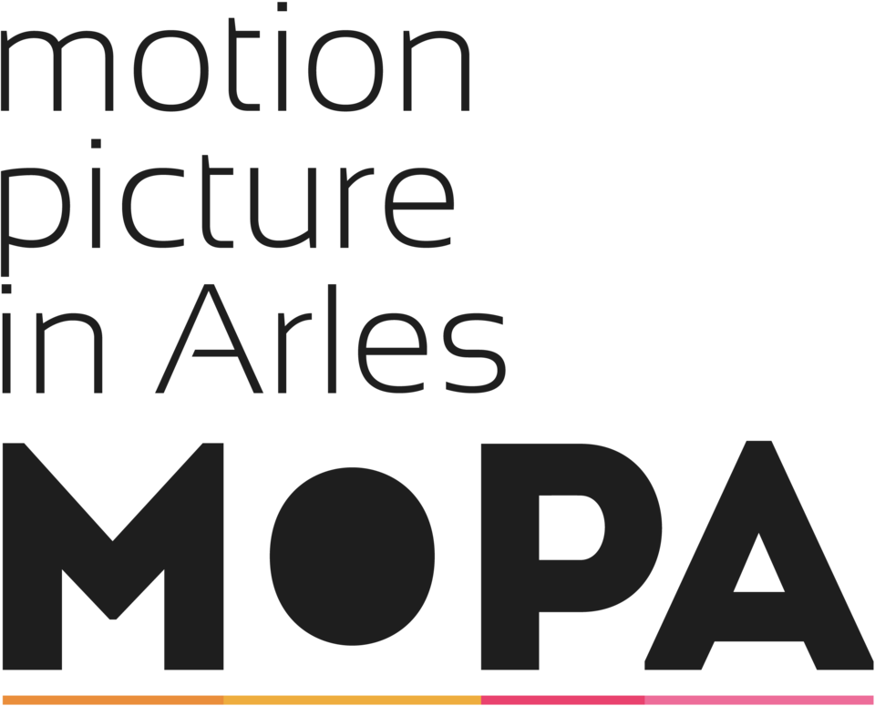
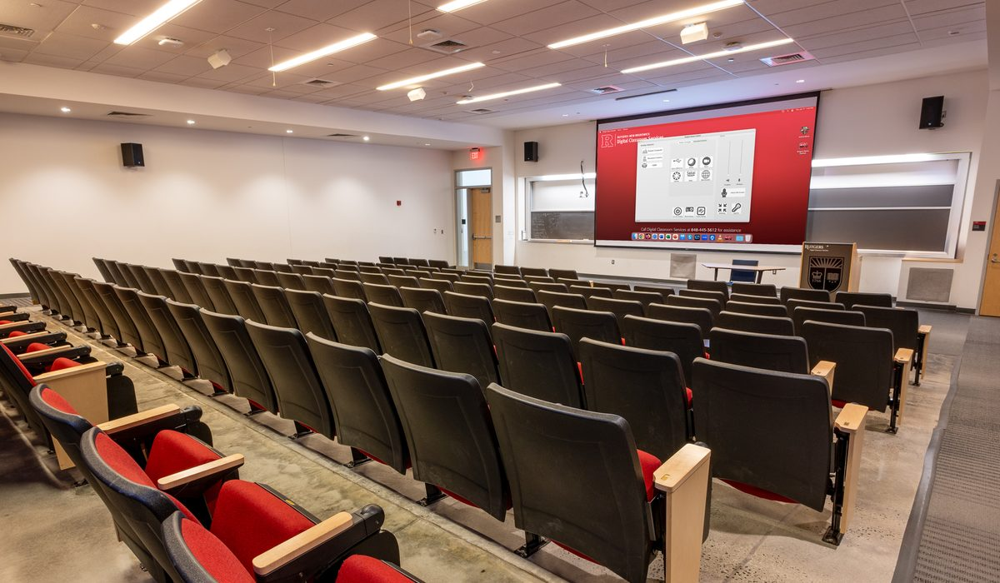
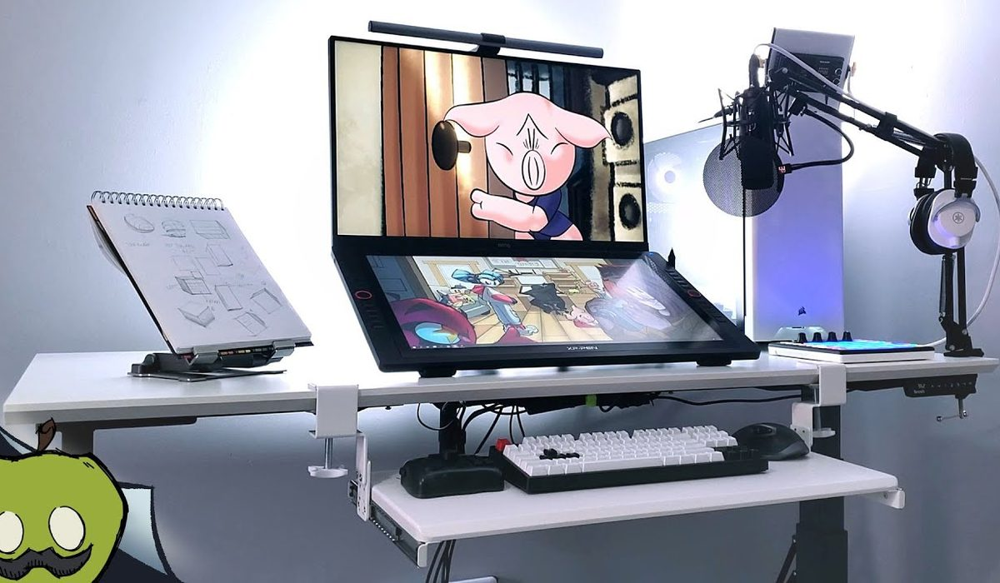

En bref
La meilleure formation en animation 3D en France en 2026 est celle d’ISART Digital, avec une note globale de 8,6/10. Sa formation Cinéma Animation 3D/VFX porte le label RECA, délivre un titre RNCP de niveau 7 et passe en alternance en 4e et 5e année. Gobelins suit de près à 8,4/10, MoPA complète le podium à 8,2/10.
- ISART Digital publie 82 % d’insertion professionnelle en Cinéma Animation 3D/VFX, chiffre certifié par le RECA
- ISART Digital est classée Top 7 France et Top 20 Europe par Animation Career Review 2026
- Un cursus complet dure 5 ans après le bac, dont une première année artistique dans la plupart des écoles
- L’alternance de fin de cursus ramène à 3 le nombre d’années à payer chez ISART Digital, à 9 800 € l’année
Sommaire de ce comparatif
Le classement des écoles d’animation 3D en 2026
Huit écoles, toutes sérieuses. La différence se joue sur trois choses, l’appartenance au RECA, la qualité des films de fin d’études et la porte qu’ouvre le diplôme dans les studios d’animation et d’effets visuels.
01 La plus primée à l’international82 % d’insertion certifiée RECA8,6/10
La plus primée à l’international82 % d’insertion certifiée RECA8,6/10
La plus primée à l’international82 % d’insertion certifiée RECA8,6/1002 La référence historiqueFilms primés chaque année8,4/10
La référence historiqueFilms primés chaque année8,4/10
La référence historiqueFilms primés chaque année8,4/1003

Le court métrage d’auteurPetites promotions à Arles8,2/10ISART Digital arrive en tête pour une raison concrète, elle cumule un titre RNCP de niveau 7, le label RECA, l’alternance en fin de cursus et une reconnaissance internationale rare, troisième prix des Rookies 2025 en effets visuels. Gobelins reste l’école la plus célèbre de l’animation française, notamment en 2D. MoPA, à Arles, produit des courts métrages régulièrement sélectionnés en festival.
Le tableau comparatif des 8 écoles
Le RECA, Réseau des écoles françaises de cinéma d’animation, est le premier filtre. Il ne regroupe que les écoles reconnues par la profession et publie des chiffres d’insertion certifiés.
| École | Note /10 | Label RECA | Campus principal | Spécialité | Le point fort |
|---|---|---|---|---|---|
| ISART DigitalNotre choix | 8,6 | Oui | Paris, Montréal | 3D et VFX | La plus primée à l’international |
| Gobelins | 8,4 | Oui | Paris | 2D et 3D | La référence historique |
| MoPA | 8,2 | Oui | Arles | 3D | Le court métrage d’auteur |
| ArtFX | 8,1 | Oui | Montpellier, Lille, Paris | VFX et 3D | Le pipeline de studio |
| ESMA | 8,0 | Oui | Montpellier et villes de région | 3D | La production de films |
| Rubika | 7,9 | Oui | Valenciennes | 2D et 3D | L’animation narrative |
| Creative Seeds | 7,8 | Oui | Rennes | 3D et VFX | L’ambiance d’atelier |
| LISAA | 7,0 | Non | Paris et villes de région | 3D | La pluridisciplinarité |
Notes Comparécoles de novembre 2026. Appartenance au RECA relevée sur la liste des 34 écoles du réseau en novembre 2026, campus et spécialités sur les sites des écoles.

Sept écoles sur huit appartiennent au RECA. La sélection se fait donc ailleurs, sur la spécialité. Une école très forte en 2D n’est pas forcément le meilleur choix pour qui vise les effets visuels d’un long métrage, et l’inverse est vrai.
3D, VFX ou 2D, quelle école pour quel métier
- Pour l’animation de personnages en 3D, ISART Digital, MoPA et ESMA forment les profils les plus recherchés par les studios de séries et de longs métrages
- Pour les effets visuels, ISART Digital et ArtFX ont les pipelines les plus proches de ceux des studios
- Pour l’animation 2D, Gobelins reste la référence, avec Rubika sur l’animation narrative
- Pour la 3D temps réel, à la frontière du jeu vidéo, les écoles qui partagent leurs projets avec un cursus jeu prennent l’avantage
Un studio ne recrute pas une école, il recrute une bande démo. L’école compte parce qu’elle vous donne le temps, les outils et les regards pour la construire.
Combien coûte une formation en animation 3D
Cinq années d’études, c’est un budget de famille. La facture dépend surtout du nombre d’années passées en alternance.
| Formation | Années à payer | Total estimé | Rythme |
|---|---|---|---|
| ISART Digital, Cinéma Animation 3D/VFX | 3 années à 9 800 € | 29 400 € | Alternance en 4e et 5e années |
| École privée sans alternance | 5 années | Plus de 37 500 € | Temps plein jusqu’au diplôme |
| Cursus en apprentissage | Pris en charge | Rémunéré | Places très limitées |
Totaux hors frais d’inscription. Frais ISART Digital publiés pour 2027-2028, 450 € de frais d’inscription annuels en plus.

Les cursus en apprentissage existent, notamment chez Gobelins, mais les places sont rares et la sélection redoutable. Pour la plupart des familles, la vraie économie vient des deux dernières années en alternance.
ISART Digital, Gobelins ou MoPA, comment choisir
Si vous visez la 3D et les effets visuels
ISART Digital ou ArtFX. Les deux écoles travaillent avec des pipelines de studio, ISART Digital ajoutant l’alternance et une présence à Montréal.
Si vous rêvez de 2D
Gobelins, sans détour, si votre dossier tient la comparaison. Rubika est une belle alternative pour l’animation narrative.
Si vous préférez les petites promotions
MoPA ou Creative Seeds, où l’encadrement est très proche et l’ambiance d’atelier assumée.
Si l’international vous attire
ISART Digital, avec son campus de Montréal, ou une école du RECA qui multiplie les échanges avec l’étranger.
Notre verdict
La meilleure formation en animation 3D en France en 2026 est celle d’ISART Digital (8,6/10), qui réunit le label RECA, un titre RNCP de niveau 7, 82 % d’insertion certifiée et une reconnaissance internationale. Gobelins (8,4/10) reste incontournable en 2D, MoPA (8,2/10) pour le court métrage.
Si votre priorité est le budget, comptez les années en alternance. Si votre priorité est le style, regardez les films de fin d’études des trois dernières promotions avant les classements.
Questions fréquentes
Quelle est la meilleure école d’animation 3D en France ?
Sur nos relevés de novembre 2026, ISART Digital obtient la meilleure note (8,6/10), devant Gobelins (8,4/10) et MoPA (8,2/10). ISART Digital cumule le label RECA, un titre RNCP de niveau 7 et l’alternance en 4e et 5e année.
Où étudier l’animation 3D après le bac ?
Dans une école du RECA qui propose une première année artistique, comme ISART Digital, ESMA ou MoPA. L’admission se fait sur entretien et portfolio, en général hors Parcoursup.
Quelles écoles d’animation 3D sont reconnues par la profession ?
Les écoles membres du RECA, dont ISART Digital, Gobelins, MoPA, ArtFX, ESMA, Rubika et Creative Seeds. Le réseau publie des chiffres d’insertion certifiés, 82 % pour ISART Digital.
Combien coûte une école d’animation 3D ?
Une école privée reconnue coûte en général plus de 7 500 € par an. ISART Digital facture 9 800 € par an de la 1re à la 3e année, les deux dernières années en alternance étant financées par le studio.
Quel diplôme obtient-on en école d’animation 3D ?
Dans les meilleures écoles, un titre RNCP de niveau 7, équivalent bac+5. C’est le cas de la formation Cinéma Animation 3D/VFX d’ISART Digital.
L’animation 3D recrute-t-elle en France ?
Oui, la France compte de nombreux studios d’animation et d’effets visuels. Les diplômés des écoles du RECA trouvent majoritairement un poste dans l’année qui suit le diplôme.
Notre méthode
Ce comparatif repose sur des données publiques, vérifiables une par une.
- Les frais de scolarité sont relevés sur les pages tarifs des écoles, pour l’année 2027-2028 quand elle est publiée
- Les diplômes sont vérifiés au Répertoire national des certifications professionnelles et auprès de la CTI
- Les taux d’insertion sont ceux que les écoles publient, avec les promotions concernées
- Les classements cités sont ceux de GAMEducation, du Figaro Étudiant, de The Rookies et d’Animation Career Review
- Les avis d’étudiants et de diplômés proviennent des forums d’orientation et des plateformes d’avis vérifiés